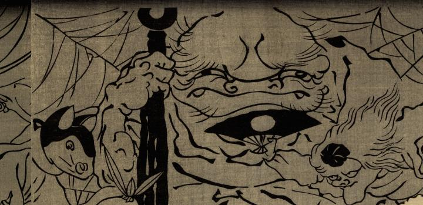

金棒を持った巨大な入道。口の端から牙が出ている。背後の蜘蛛の巣は、この入道が張ったものだろうか。
出典：親書誌：U426_nichibunken_0268：四天王化物蝋燭；シテンノウ バケモノ ロウソク／日付：2014／資源識別子：U426_nichibunken_0268_0011_0000
Copyright (c)2010- International Research Center for Japanese Studies, Kyoto, Japan. All rights reserved.